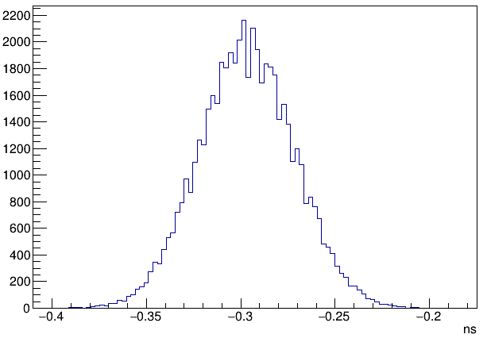
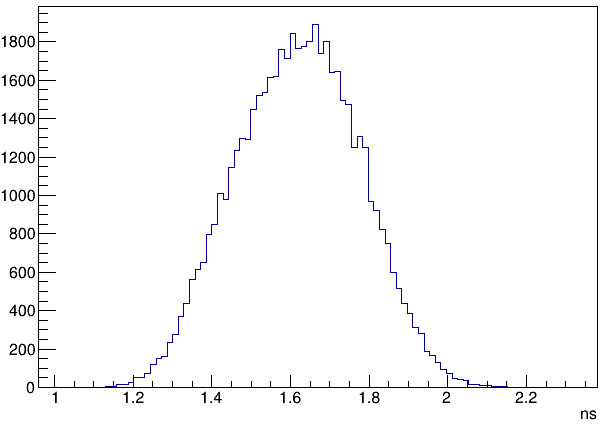

时间分辨¶
脉冲产生装置¶
100M 模块¶
Width: 100ns 设置为最小值，平台时间
Rise time: 0.1 us 上升时间
Fall time: 100 us 衰减时间常数
Rate: 1.0 kHz 频率
Delay: 250ns 任意设置
Ampl: 10.0 V 根据需要设置
Polarity: Pos 根据需要设置
Pulse Top: Flat
Atten: 1X 根据需要设置
PB-5 Pulse: ON 开启脉冲输出
脉冲发生器产生信号经过分路器一分为二。
2 channel in one module¶
本征分辨约为 60 ps
2 channel in one crate¶
2 channel in different crate¶
本征分辨约为 360 ps